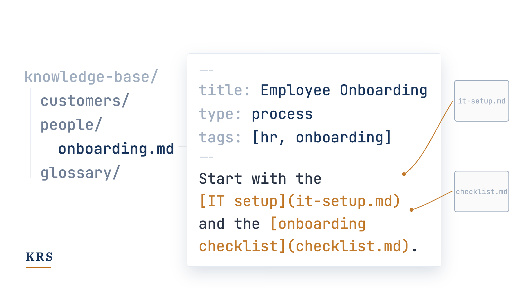
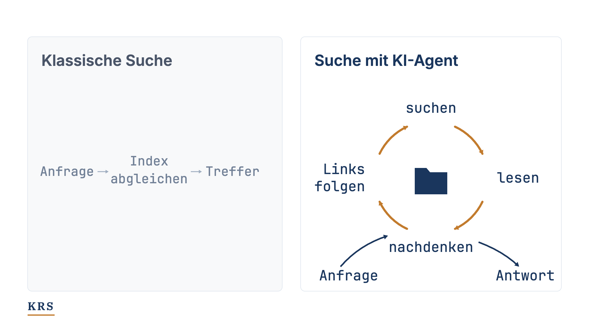

Das beste Format für Firmenwissen ist vielleicht ein Ordner mit Markdown-Dateien
Warum ein Ordner mit Markdown-Dateien nach dem Open Knowledge Format Menschen und KI-Agenten gleichermaßen dient, und wo seine Grenzen liegen.

Zuerst erschienen auf LinkedIn (Englisch). Für die Website übersetzt.

Was ist das beste Format, um das Wissen eines Unternehmens abzulegen? Jahrelang lautete die Antwort: PDFs und Word-Dokumente auf einem Netzlaufwerk, ein eigenes Wissensmanagementsystem oder ein Wiki. Heute halte ich einen Ordner mit Markdown-Dateien für die beste Antwort, strukturiert nach dem Open Knowledge Format.
Warum? Weil der Wert einer Wissensbasis davon abhängt, wie leicht man mit ihr arbeiten kann. Zwischen Ihnen und der Möglichkeit, Ihre Dokumente zu durchsuchen, zu ändern, zu verlinken, neu zu ordnen oder neu zusammenzufassen, sollte so wenig Reibung wie möglich liegen. Das sollte gelten, egal ob ein Mensch liest und schreibt oder ein KI-Agent in Ihrem Auftrag. Ein Ordner mit Markdown-Dateien hält diese Reibung gering und ist trotzdem ausdrucksstark genug für die meiste Wissensarbeit.
Warum Markdown
Markdown ist eine verbreitete, schlanke Auszeichnungssprache aus dem Jahr 2004, entwickelt von John Gruber mit Aaron Swartz. Fast jeder Texteditor und jede Notiz-App kann sie lesen. Die Grundsyntax für Links, Überschriften, Listen und einfache Formatierungen ist schnell gelernt. Das ursprüngliche Ziel war Lesbarkeit: Ein Markdown-Dokument soll schon als reiner Text lesbar sein, bevor es überhaupt dargestellt wird. Das macht Markdown ungewöhnlich langlebig. Es ist an keinen Anbieter, keine Oberfläche, keine Datenbank und keine Anwendung gebunden. Man kann es in einer modernen Notiz-App öffnen, in einem Code-Editor, im Terminal oder in dem Werkzeug, das als Nächstes kommt.
Das ist heute noch wichtiger als vor ein paar Jahren, denn Wissensbasen werden nicht mehr nur von Menschen gelesen. Immer häufiger werden sie von KI-Agenten gelesen, durchsucht, geändert und gepflegt, und diese können mit genau dieser Form von Wissen sehr gut umgehen. Sie können über Ordner hinweg suchen, Links folgen, benachbarte Dateien für den Kontext prüfen, nach einer Änderung mehrere Dokumente aktualisieren und bei Bedarf neue Zusammenfassungen oder Verzeichnisse anlegen. Markdown ist außerdem das Format, das große Sprachmodelle von sich aus verwenden, wenn sie strukturierten Text erzeugen sollen. In diesem praktischen Sinn kommt es ihrem natürlichen Arbeitsformat sehr nahe.
Was das Open Knowledge Format ergänzt
Wissen legt man am besten als Netz verbundener Informationen ab. Man denke an Wikipedia und daran, wie Links in einem Artikel auf andere verweisen. Hat man viele Markdown-Dateien, von denen jede einen Knoten in diesem Netz darstellt, braucht man eine Ordnung, um sie zu verwalten. Hier kommt das Open Knowledge Format (OKF) ins Spiel. Es ist eine neue offene Spezifikation, die Google Cloud im Juni 2026 veröffentlicht hat, und sie legt fest, wie Wissen als Ordner mit Markdown-Dateien dargestellt wird. Im Kern beschreibt sie eine einfache Frontmatter-Syntax und einige Benennungsregeln, mehr nicht. Sie ist bewusst minimal gehalten.

OKF ist noch sehr neu, leuchtet aber sofort ein, weil es festschreibt, was viele ohnehin schon tun. In Obsidian, einer verbreiteten Notiz-App, liegt persönliches Wissen in verschachtelten Ordnern mit Markdown-Dateien. Dasselbe Muster zeigt sich bei Coding-Agenten, wenn sie mit Projektgedächtnis und langfristigem Kontext arbeiten. Claude Code, Codex und andere Coding-Agenten stützen sich stark auf Markdown-Dateien, um Anweisungen, Kontext und Projektwissen abzulegen. Das Open Knowledge Format übernimmt die Erfahrungen aus diesen Anwendungen und gibt ihnen eine gemeinsame Struktur.
Gemacht für KI-Agenten
Die enge Verbindung zu KI-Agenten ist das stärkste Argument für OKF. Coding-Agenten können genau diese Form bereits lesen und schreiben: einen Ordner mit Textdateien, sprechenden Namen, Links und schlanken Metadaten. Legt man das Wissen des Unternehmens genauso ab, können Agenten viel leichter direkt damit arbeiten. Es braucht keinen eigenen Konnektor, keinen besonderen Import und keine Abhängigkeit von einer proprietären Schnittstelle. Ein Agent kann klassische Textsuche auf der Kommandozeile mit eigenem Nachdenken verbinden, die relevanten Dateien prüfen, Links folgen und von dort weitersuchen. Das Ergebnis verhält sich weniger wie ein starres Suchfeld und mehr wie ein sehr fähiger Rechercheassistent: wahrscheinlich nicht immer der schnellste, aber oft stark in der Tiefe, weil er in einer Schleife lesen und nachdenken kann und nicht nur einen Index abgleicht.

Bei KRS haben wir diese Form von Anfang an übernommen, für unser internes Wissen und für die Wissensbasen, die wir für Kunden aufbauen. Ich nutze Obsidian seit Jahren als persönliches Wissenssystem. Die Entscheidung für OKF war deshalb einfach: Wir waren schon zu 99 % dort, und es ergibt wenig Sinn, an einem internen, proprietären Format festzuhalten, wenn ein offenes nur einen kleinen Schritt entfernt ist.
Einschränkungen
Natürlich gibt es Einschränkungen. Ein einfacher Ordner mit Markdown-Dateien hat für sich genommen keine Versionsgeschichte. Die bekommt man, sobald man ihn in einer Versionsverwaltung wie Git führt. Dann hat man eine vollständige Änderungshistorie, Vergleiche und die Möglichkeit, Änderungen zurückzunehmen, und all das zählt, sobald ein Team sich auf dieses Wissen verlässt. Bei sehr großen Wissensbasen braucht man wieder einen eigenen Suchindex, damit der Agent im Rahmen seines Kontexts und seiner Antwortzeit bleibt. Eine weitere Herausforderung ist die Governance. Wenn feingranulare Zugriffsrechte in Ihrer Organisation wichtig sind, müssen Sie den Zugriff mindestens pro Datei einschränken. Ist das in Ihrem Bereich tatsächlich eine Vorgabe, haben Sie wahrscheinlich schon Regeln und Plattformen für die Dokumentenverwaltung. Dann steigt die Reibung im System, und zwar aus gutem Grund.
Und schließlich will oder kann nicht jeder mit Coding-Agenten auf eine Wissensbasis zugreifen. Dann braucht man eine andere Oberfläche für Suche und Navigation. Obsidian bringt eine mit. Chatbot-Lösungen haben meist eine RAG-Suche eingebaut, und OKF sollte sich sehr leicht in ein solches System übernehmen lassen.
Fazit
Alles in allem halte ich einen Ordner mit Markdown-Dateien heute für einen der einfachsten und flexibelsten Wege, die Wissensbasis eines Unternehmens zu verwalten. Sie bleibt vollständig unter Ihrer Kontrolle, lässt sich lokal betreiben und in jedem Texteditor lesen und bearbeiten. Das Format ist ausdrucksstark genug für alles, was man von Dokumenten erwartet: Links, Tabellen, Code-Ausschnitte, Metadaten und Formatierung. Es funktioniert gut mit Git, Menschen können es leicht prüfen, und KI-Agenten können es leicht verarbeiten. Und weil es offen, übertragbar und bewusst unspektakulär ist, wird es wahrscheinlich viele der Oberflächen und Werkzeuge überdauern, mit denen wir heute darauf zugreifen.
Genau so, glaube ich, sollte man sein Wissen heute ablegen.